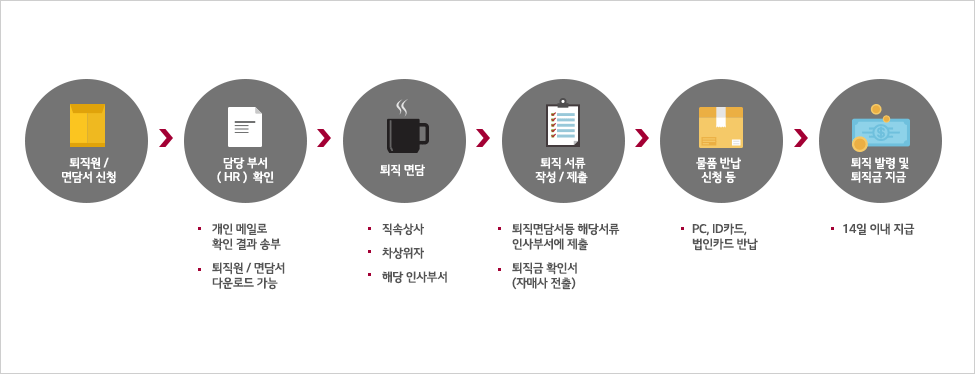

HR 제도안내
- HR 제도안내
- 인사제도·발령
- 퇴직
퇴직
퇴직 Process

* 모든 서류제출과 물품반납은 최소한 퇴직 1주일전까지 완료함. * 사무직 간부사원 이상은 본사의 경우 사업부장 이상, 사업장/연구소의 경우 공장장/연구소장 면담을 반드시 실시함.
퇴직금
퇴직금 계산방법 :
사원이 퇴직한 때에는 근속년수 매1년에 대하여 30일(1개월)분의 평균임금을 퇴직금으로 지급함.
- 평균임금 퇴직일 이전 3월간에 지급된 급여총액(기본급, 각종 고정수당 및 시간외수당, 야근근로수당, 휴일근로수당 등 변동수당 포함)을 그 기간의 총일수로 제한 금액의 30일분과 퇴직일 이전 1년간에 지급된 상여금 및 년월차 휴가보상금을 12로 제한 금액을 합산한 것으로 함.
- 퇴직전환금 공제 회사에서 납부한 본인 퇴직전환금(93.1월~99.3월)을 퇴직금 지급시 본인의 퇴직금에서 공제함.
지급방법 :
- 개인형퇴직연금(IRP : Individual Retirement Pension) 계좌로 입금함.
국민연금
60세 미만의 가입자가 사업장에서 퇴사하면 지역가입자가 되므로 본인의 주민등록지를 관할하는 공단지사에 신고하여야 함
⇒ 국민연금관련 안내전화 : 02-2240-1114
퇴직후 소득이 없을시에는 국민연금 납부 제외 대상임
재 취업시- 연금공단에서 재취업직장 Data와 자동연결 관리됨.
건강보험
지역 또는 타 직장에서 국민건강보험공단 가입 시
국민건강보험카드를 퇴직원과 함께 회사에 반납 후
자격상실 확인 후(국민건강보험공단 확인: 상담실/02-3774-5114)
지역 국민건강보험공단에서 취득 신고 함.
고용보험
직업능력개발훈련
- 영등포고용안정센타에 문의(☎ 02-2632-6054~6)
실업급여
- 이직일 이전 18개월중 6개월 이상 피보험자로 있어야 하며 이직 후 재취직 의사가 있어 적극적인 구직활동(노동관서에 구직신청)을 해야 함
- 영등포고용안정센타에 문의(☎ 02-2632-6054~6)
PC 반납
전용 PC : 각 사업장 PC 유지보수 담당자에게 반납
공용 PC : 신규 관리자를 선임하여 공용 PC 관리자 이관 필요
* 관리자 이관 방법 : "전자결재 > 결재양식함 > IT > PC 실사용자 정보변경 신청" 에서 품의 진행